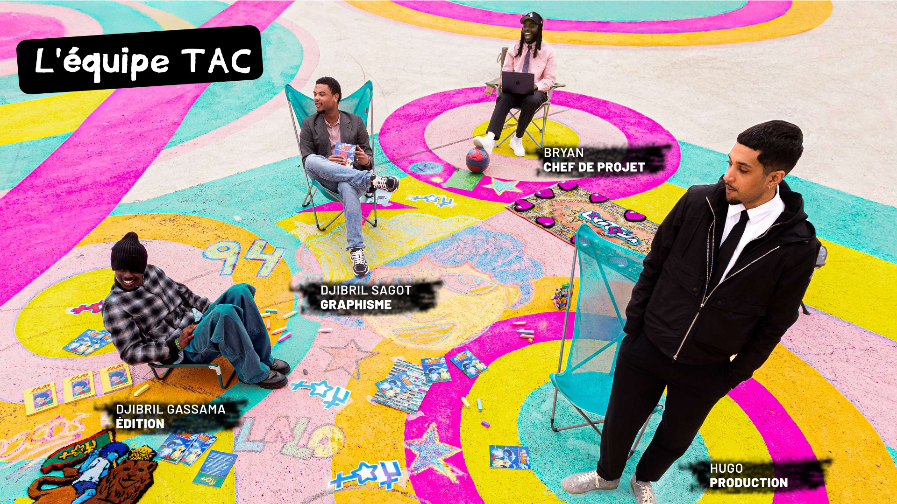

Fontenay-sous-Bois
Workshop Delusion — Atelier illustration
Atelier créatif mené autour du dessin et de l'illustration. Les participants ont créé leurs propres personnages et visuels.
for the kids of todayfor the kids of tomorrow

Fontenay-sous-Bois
Atelier créatif mené autour du dessin et de l'illustration. Les participants ont créé leurs propres personnages et visuels.
Vincennes
Texas Anime Corp réalisait des portraits dessinés en direct lors du festival Yardland. Les visiteurs pouvaient repartir avec leur propre illustration.
LALO x Protect The Children
Pour la sortie du tome 2 de LALO, Texas Anime Corp a organisé une exposition et plusieurs ateliers créatifs en collaboration avec Protect The Children. L'événement réunissait enfants et familles autour du dessin, de la lecture et de la personnalisation textile.
Paris
Atelier créatif organisé avec JustKids autour du dessin et de l'illustration. Les participants ont exploré l'univers graphique de Texas Anime Corp et créé leurs propres personnages.
Paris
Texas Anime Corp a animé un workshop créatif dans la boutique Moncler des Champs-Élysées autour de l'illustration et du character design.
LA REDOUTE
Résidence artistique consacrée à l'urbanisme et à l'imaginaire, où les enfants explorent leur ville à travers le dessin et la création collaborative. Ces ateliers transforment leur vision du quotidien en un univers graphique unique, mêlant réalité et créativité.
Créteil
À l'occasion des Jeux Olympiques de Paris 2024, Texas Anime Corp a animé des ateliers de dessin et de création graphique auprès du jeune public.
Fontenay-sous-Bois
Ateliers créatifs destinés aux enfants autour du dessin, de l'illustration et de la découverte de nouveaux univers visuels.
LALO x Jah Jah
Pour la sortie du premier tome de LALO, Texas Anime Corp a organisé une exposition et plusieurs ateliers créatifs au sein du concept store Jah Jah. L'événement présentait l'univers du livre et proposait des activités autour de l'illustration.
YARD
En collaboration avec Yard, nous avons organisé une édition de Yard School dédiée aux métiers de l'illustration. L'événement réunissait une trentaine de jeunes venus rencontrer des professionnels et participer à des ateliers créatifs.